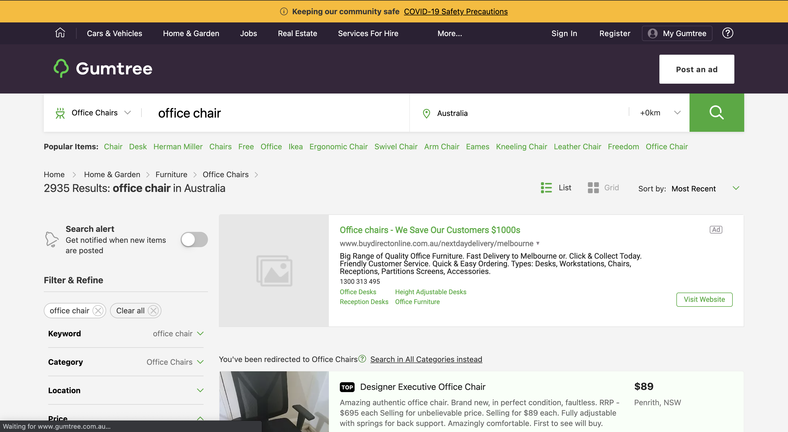
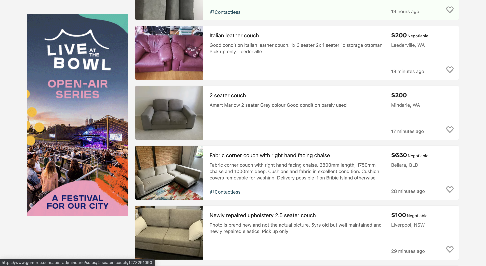
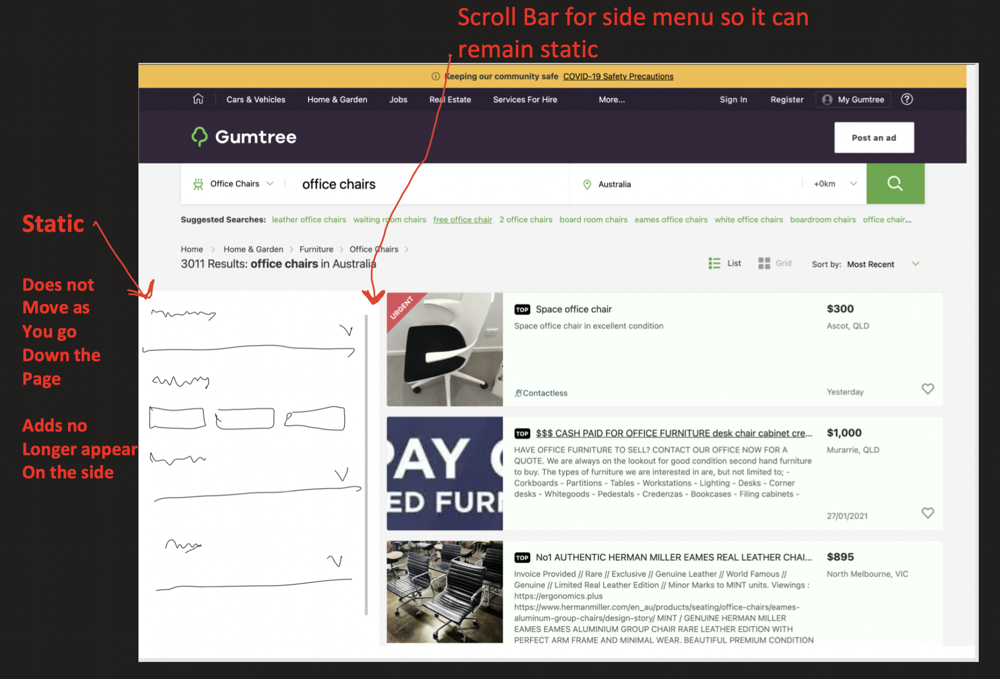
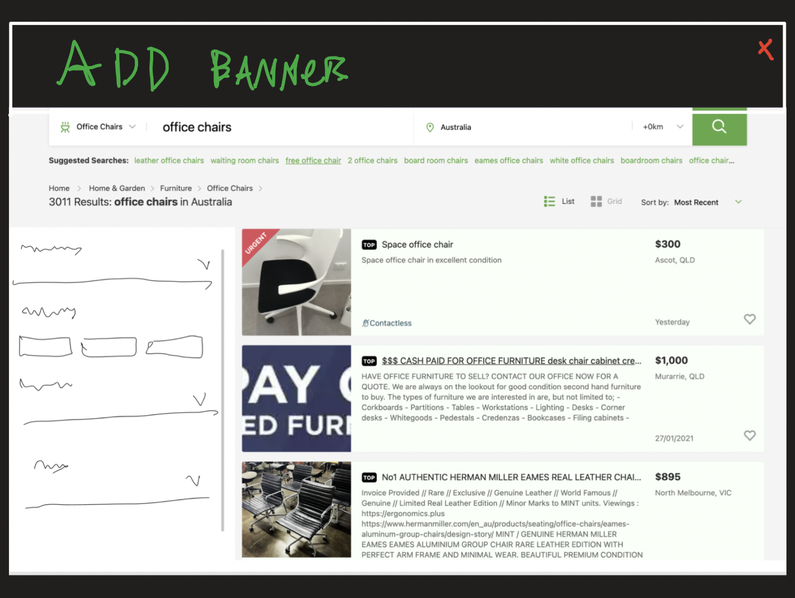

|
Design Changes! | User Survey! |
|
Here is the original design of the gumtree page when you are searching for an item. |
|  |
|
That was the page before you scroll down This is the page after |
|  |
|
As you can see the "Filter and Refine" side bar disapears and is replaced with an add |
Solution!In our designs we have made the side bar static and stick to the left of the page, with a scroll feature to go up and down the side bar |
|  |
After Scrolling |